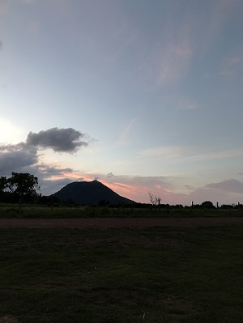
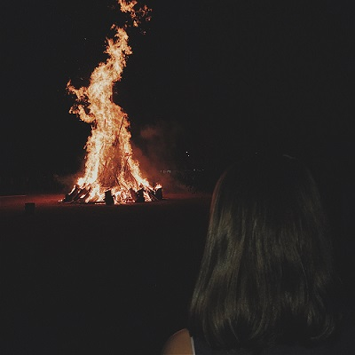

While I went to france I attended my cousin Clara's wedding. She got married on July 1st, 2017 in the town church. After she was married, we headed to the reception which was held at her country home. It lasted all through the night with a lot of dancing, singing, and music. Afterthe wedding was over my cousins and I slept in the bride and grooms house in sleeping bags. It was my first wedding and it was great experience and I loved getting to spend quality time with my family.
On June 24th,2017 my mom,cousin,my aunt and I decided to have a picnic on the volcano in the city called Le Puy du Dome.We went around sunset and I was able to take many pictures of the volcano and my cousin. We ate ham sandwhiches and just watched the beautiful sunset and we were able to tell stories about the past. It was a really great experience and even though it was cold I would do it again.

After we ate our picnic on the puy de dome we were on our way down the volcano we passed by a small town called Beaune le Chaud. They were celebrating a holiday called St.Jean Baptiste day and they created a huge bombfire. People were eating and dancing and really having having a good time. It was very unique because I have never seen people celebrate with a fire.

By: Ella